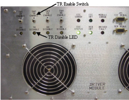
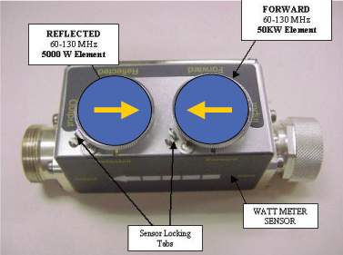
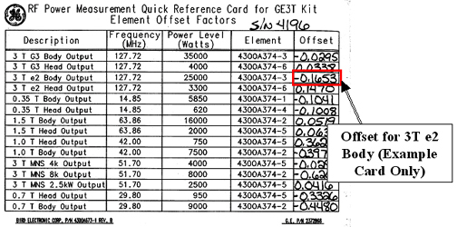

Operating Documentation
Direction 5440000, Rev# 5
Signa HDxt Service Methods
Module Version 2.0, Version Date 9/23/09
Operating Documentation |
| Required Persons | Preliminary Reqs | Procedure | Finalization |
|---|---|---|---|
| 1 | Not Applicable | 45 mins | 5 mins |
This procedure calibrates the Body mode of the 25 kW RF Amplifier (Illustration 1) to 25 kW using the Power Measurement Kit (Wattmeter).
Illustration 1: 25 kW RF Amplifier Front and Back

Illustration 2: Body Calibration Flowchart

| Item | Qty | Effectivity | Part# | Manufacturer | |
|---|---|---|---|---|---|
| Power Measurement Kit (Wattmeter Kit) | 1 | - | 2372868 | - | |
| 10 in. Crescent Wrench | 1 | - | - | - | |
| Medium Phillips Screwdriver | 1 | - | - | - | |
| ||||
| FATAL ELECTRIC SHOCK HAZARD! | ||||
| Dangerous voltages are present throughout the RF cabinet when it is energized. | ||||
| TO PREVENT FATAL ELECTRIC SHOCK, MAKE SURE THE RF AMPLIFIER IS DISABLED WHEN CONFIGURING THE CALIBRATION TOOLS. |
| ||||
| Do not operate the RF Amplifier with an improper load connected to its output. Doing so may permanently damage the amplifier. | ||||
| ||||
| Prevent coil and associated switch damage by removing all phantoms and hardware (for example, Head Coil, Surface Coil, etc.) from the magnet bore. | ||||
Verify that the system is in Idle, and all coils were removed from the magnet bore.
Remove the front cover of the Systems Cabinet.
On the front of the Driver Module, disable TR error reporting by making sure the TR Switch (shown below) is set to TR Disable (default).
Illustration 3: Driver Module Switch

| NOTE: | HV, DD and MC should remain set to Enable. |
| ||||
| The correct attenuation sensor elements must be placed in the Forward and Reflected Ports of the Bird Coupler. Be sure to follow the procedure for the Body Setup shown in Illustration 4. | ||||
Insert the 50 kW element into the Forward Sensor Port (blue, P/N 4300A374-3).
Make sure the arrow on the element points in the direction of the arrow (from Input to Output) on the Sensor.
Lock the element in place using the locking tab on the sensor as shown below.
Illustration 4: RF Coupler Setup for Body Mode

Insert the 5000 W element into the Reflected Sensor Port (blue, P/N 4300A374-6). See Illustration 4.
| NOTE: | The Reflected Port is not used during this procedure. Placing the 5000 W element into this port is a safety measure; this port is not used during Body Calibration. |
Make sure the arrow on the element points in the opposite direction of the arrow on the Sensor.
Lock the element in place using the locking tab on the sensor.
| ||||
| ELECTRICAL/RF BURN HAZARD! | ||||
| RF BURNS CAN OCCUR AS A RESULT OF DISCONNECTING HELIAX CABLES WHILE THE SYSTEM IS SCANNING. | ||||
| PREVENT POSSIBLE RF BURNS WHEN DISCONNECTING HELIAX CABLES FROM J3 OR J4 ON THE RF amplifier BY VERIFYING THAT THE SYSTEM IS NOT MANUALLY PRESCANNING OR SCANNING. VERIFY THAT THE SCAN DESKTOP ICON DISPLAYS THE "IDLE" MESSAGE AND THE RF ENABLE SWITCH IS IN THE "OFF" POSITION. |
| ||||
| Do not connect/disconnect the Wattmeter Sensor while the meter is On. Always turn the meter Off prior to plugging/unplugging the Sensor. | ||||
Verify the scanner is in Idle; turn Off RF Enable at the Exciter (FP-I/O), or disconnect J14 (RF Drive Input) from the back of the RF Amplifier.
Disconnect the Body Cable J4 (Body Output) from the bottom of the RF Coupler at the back of the RF Amplifier.
To protect the Head Amplifier section, disconnect the Head Cable J3 (Head Output) from the bottom of the RF Coupler at the back of the RF Amplifier as well.
Connect the Input of the Bird Coupler to J4 on the back of the RF Amplifier as shown in Illustration 5 and Illustration 6.
| NOTE: | The arrow on the Bird Coupler should be pointing in the direction of the RF signal, away from the RF Amplifier. |
Illustration 5: Connection of RF Coupler to Body Output

Connect the Output of the RF Coupler to the 35 kW Dummy Load as shown in Illustration 6.
Illustration 6: Complete Body Output Test Setup

Connect one end of the Wattmeter Cable to the Wattmeter Sensor Connector, and connect the other end to the Bird Coupler. (RS232 is not used.)
| ||||
| Do not apply power to the Dummy Load without the fan operating. Doing so will result in catastrophic damage to the Dummy Load. | ||||
Make sure to plug the fan for the Dummy Load into a service outlet in the Systems Cabinet.
Reconnect J14 on the back of the RF Amplifier, and switch the RF Enable to On.
For more information on the Wattmeter, see Watt Meter (2372868) Introduction.
Press the <On> button on the Wattmeter. (If the coupler and sensor are not correctly attached to the RF Amplifier, a No Sensor message will display.)
Select the [arrow up] button under Scale.
Type: 50000 to set the range, and press [Enter].
Check the setting by selecting the [arrow up] button under Scale again.
Press <Enter> to exit this mode.
Select the [arrow up] button under Fwd Units, and make sure the scale reads W (or kW on some Wattmeters).
If the scale reads dBm, select the [arrow up] button under Fwd Units again to toggle the scale to read W for Watts or kW for kilowatts on the Top, Forward Power scale.
Ignore the BOTTOM, Reflected Power scale value. It is not used during Maximum Power Calibration.
Press <Shift> and select the [arrow up] button under Setup.
Verify that it reads 43.
If not, type: 43 and press <Enter>. (Illustration 7 shows what should be displayed at this time.)
| NOTE: | This action displays the Sensor Type configured in the Wattmeter. This procedure uses Sensor type 43, optimized for peak power measurement. |
Illustration 7: Wattmeter Display Set to Read Peak Power Sensor

Press <Enter>.
Select the [arrow up] button under Type.
Change the unit of measurement to Peak.
Some kits require an offset to ensure accurate measurement. Locate the Element Offset Factor Card in the kit, and view the offset for 3T e2 Body Output. (See Illustration 8.)
Illustration 8: Element Offset Factor Card

If an offset exists, press the [Offset] button on the Wattmeter.
Type the value that was displayed on the kit’s Offset Card.
Press <Enter>. (Illustration 9 shows what should be displayed at this time.) The meter is now configured to read RF Peak Power in Watts for the Body Maximum Output Calibration.
| NOTE: | An offset label should flash on the Wattmeter display if an offset was entered. The meter is now configured to read RF Peak Power in Watts for the Head Maximum Output Calibration. |
Illustration 9: Wattmeter Set to Display Peak Power

To ensure the true Body mode Output Power Level is correctly measured, the ampCalHead and ampCalBody values in the Mrconfig.cfg file must initially be set to zero (0).
Select the Service Desktop Manager (Tools menu), then [Utilities].
Select [Config File Manager] and [Start].
Select [MR Config] file, and scroll to Body Coil Amp Calibration Factor parameter.
Record the value: ampCalBody = ________ in the Data Sheet.
| NOTE: | If calibrating the RF Amplifier for the first time, the value of the ampCalHead and ampCalBody parameters will be set at the default value of zero (0). |
If necessary, change: ampCalBody = 0.
Select [Quit] to save the new ampCalHead and ampCalBody values.
When asked to quit:
Select [Yes].
When the pop-up displays stating the Mrconfig file was changed, click [Save].
Reboot the system.
Disable the UTNS. For systems using a UTNS3, refer to Stopping and Starting UTNS3 .
| ||||
| Prevent coil and associated switch damage by removing all phantoms and hardware (for example, Head Coil, Surface Coil, etc.) from the magnet bore. | ||||
Prepare the system to scan in Body mode using Table 1.
Table 1: Scan Prescription - Body Calibration
|
Right-click and select Research Options, then [Download].
Select [Manual Prescan] and [Scan TR].
Set the Transmit Gain to 50. Make sure everything is functioning normally and a reading displays on the Wattmeter.
Set the Transmit Gain to 180.
Make sure everything is functioning normally and a reading displays on the Wattmeter.
Allow the scanner to pulse at TG 180 for 6 minutes. (This is due to the drop in gain that occurs over the 6-minute period.)
Slowly increase the TG toward 200 while watching the Wattmeter. Do not exceed 25 kW.
If 25 kW (±1 kW) is reached at a TG of 200, no further adjustment is necessary. Reduce TG to 0 (zero) and proceed to Finalization, Step 1.
If the Amplifier trips out before 25 kW (±1 kW) is reached, the output is out of specification. Proceed to Step .
If the Amplifier reads less than 25 kW at a TG of 200, check Further Troubleshooting for troubleshooting suggestions.
Allow the Amplifier to reset and slowly increase the TG to 200.
When nearing the point that the Amplifier tripped, increase the TG in 1-count increments until the Amplifier trips Off.
Record the Actual TG Trip value.
The Actual TG Trip value must be subtracted from the maximum TG Value needed (200). See an example of this calculation in Table 2.
| NOTE: | 1dB gain = 10 counts in AmpCal factor. |
Table 2: Subtract Actual TG Value from 200
| 200 | Example | 200 | |
| Actual TG Trip Value: | Actual TG Trip Value: | 196 | |
| New AmCalBody Value: | New AmCalBody Value: | 4 |
If the desired Voltage Level cannot be obtained, check the cables and connectors between the UCERD, DRSM and the Amplifier.
Select the Service Desktop Manager (Tools menu), then [Utilities].
Select [Config File Manager] and [Start].
Select [MR Config] file, and locate the ampCalBody parameter in the Mrconfig.cfg file.
Change the ampCalBody value to the new ampCalBody value calculated in Table 2.
Select [Quit] to save the new value.
When asked to quit, select [Yes].
After updating the file, go to the top menu bar and select [File] and [Save].
Select [Quit].
Reboot the system. (The software uses the new ampCalBody value to match TG and maximum output of the Amplifier at 25 kW.)
Check the new ampCalBody value by repeating Step .
To further troubleshoot with the On Line Center and/or Service Engineering:
Complete the RF Power Calibration procedure now, and perform SPT when possible.
Note the TG levels reported by SPT for both Head and Body, and report these values to the OLC or Service Engineering. (These values will help determine the proper course of action.)
Illustration 10: Cable Path UCERD to RF Amplifier

Determine roll-off by performing the oscilloscope Roll-off Calculation. Using this roll-off value, recalculate the Calculated Voltage Level.
| NOTE: | Signal roll-off is unique to every oscilloscope. The slower the oscilloscope, the more signal roll-off, and some scopes are worse than others. A standard roll-off value is not available. The frequency being measured is a 127.7 mHz signal. Scope roll-off will also affect a 350 mHz scope, but it may not be as severe. Roll-off will make the UCERD output look smaller than it really is. |
Verify scanner is Idle; turn Off the RF Enable at the Exciter (FP-I/O Board), or disconnect J14 from the back of the RF Amplifier.
Disconnect the Power Measuring Equipment from the system.
Connect the Original Body Output Cable to J4 at the bottom of the RF Coupler at the back of the RF Amplifier.
Connect the Original Head Output Cable to J3 at the bottom of the RF Coupler at the back of the RF Amplifier.
Re-enable RF Enable at the Exciter (FP-I/O Board), or reattach the RD Drive Cable to J14 at the rear of the RF Amplifier.
Re-enable TR Error reporting by enabling the TR Switch on the front of the Driver Module shown in Illustration 3.
Replace all covers.
Perform a [Reset TPS] to ensure the RF Amplifier is in a known state to the system.